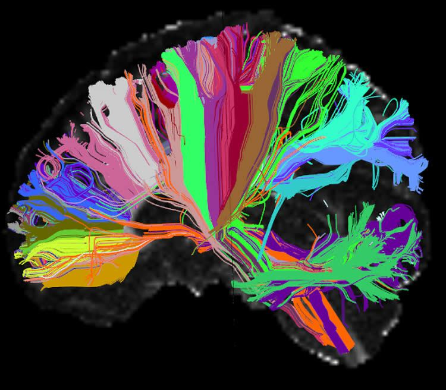

Human Connectome Project Marks Its First Phase
Brain connectivity gets personal, as an individual’s scans predict behavior.
Scans of an individual’s brain activity are emerging as powerful predictive tools, thanks to the Human Connectome Project (HCP), an initiative of the National Institutes of Health. Such individual differences were often discarded as “noise” – uninterpretable apart from group data. Now, recently reported studies based on HCP neuroimaging and psychological data show that individual differences in brain connectivity can reliably predict a person’s behavior. Such scans might someday help clinicians personalize diagnosis and treatment of mental disorders, say researchers.
One study (link is external) found that an individual’s unique resting state connectivity “fingerprint” can accurately predict fluid intelligence. Another developed a model (link is external) that similarly predicted individuals’ performance on a variety of tasks, including reading and decision-making. Notably, no brain scans or psychological tests were required specifically for these studies; instead, the researchers drew upon an unprecedented trove of shared data from more than a thousand subjects made available by the HCP.
This database is one of the achievements being showcased this month, as the NIH celebrates completion of the HCP’s first phase. A symposium, open to the public, spotlighting HCP’s successes to date, will be held on the NIH campus in Bethesda, Maryland, June 20, 2016, 12:30 – 5:30 p.m. ET. It will also be videocast worldwide.
In 2010, NIH awarded two HCP grants to map the human brain’s connections in high resolution. The aim was to understand the connections of the healthy human brain to establish a baseline that would help identify connectivity abnormalities in brain disorders. The grants supported two research consortia, one led by researchers at Washington University, in St. Louis, and the University of Minnesota; the other led by investigators at Massachusetts General Hospital (MGH)/Harvard University, Boston, and the University of California Los Angeles (UCLA).
The MGH/UCLA consortium built a custom “Connectom” scanner with advanced diffusion MRI technology that can visualize the brain’s networks in 10-fold higher detail than conventional scanners. At least two other leading research centers have recently adopted the HCP-designed high-powered diffusion imaging scanners – which boost resolving power via magnetically stronger copper coils, called gradients.
This High Angular Resolution Diffusion Image (HARDI) of the human brain shows long distance connections, or tracts, grouped on the basis of their anatomical neighborhood. Wiring associated with particular brain structures share the same color. In diffusion imaging, the scanner detects movement of water inside neural fibers to reveal their locations.NeuroscienceNews.com image is credited to Anastasia Yendiki, Ph.D., Viviana Siless, Ph.D., MGH/Harvard, Boston Adolescent Neuroimaging of Depression and Anxiety (BANDA).
In parallel, researchers at Washington University and the University of Minnesota led a multi-institution consortium that comprehensively mapped long-distance brain connections and their variability in 1,200 healthy adults (twins and their non-twin siblings), using both MRI and magnetoencephalography. By pairing studies of structural and functional brain connectivity with extensive behavioral and heritability measures, the project has provided data about brain connectivity, its relationship to behavior, and contributions of environmental and genetic factors to individual differences in brain circuitry.
Technical advances achieved during the project have transformed the field – for example, enabling much more efficient data collection by dramatically shortening the duration of scans while maintaining high-resolution images. The wealth of data gathered has been shared with the wider neuroimaging community via a data archive (link is external) supported by NIH. These user-friendly tools for data mining, analysis, and visualization are enabling discoveries such as those on the predictive power of individual scan data, noted above.
The June 20 symposium will also feature reports on the second phase of the HCP, which will collect data from healthy subjects across the human lifespan and from individuals with specific clinical diagnoses.